ホームメイドは内装クロス・外壁塗装・水回り・木部塗装補修工事・畳入替え・建具補修などの建築リフォーム工事を専門とする会社です。
TEL. 058-262-5694
〒500-8029 岐阜市東材木町37-2
施工手順の詳細PRODUCTS
S邸施工事例
◆ 現調 （Befor)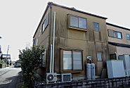
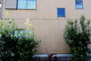 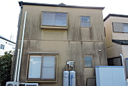
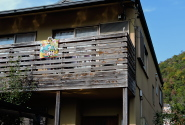
○ 外壁は黒カビが一面にひろがり、特に北側の状態がひどく、防カビの塗装を下塗りに使用し和を醸し出すために艶消し塗料を使用しました。木部デッキもかなり劣化が進んでいたので、キシラデコールを塗って木部の外観を保護することにしました。
外壁防水塗装工事 ベランダ庇改修工事 木製デッキ・扉塗装工事
◆ 木部デッキ
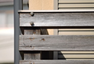
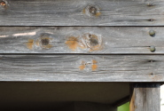 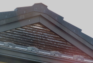
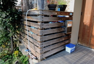
○ 木部のデッキ板塀なども塗装が剥げて割れや腐食が進んでいました。キシラデコールの色の濃い塗装を使用して木部を保護し、割れや腐食が目立たないようにしました。
木製デッキ痛みの状況を見る
◆ 各外壁部の状態 ↓
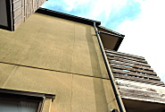
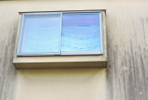 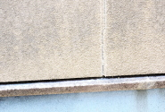
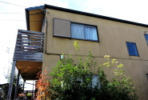
○ 外壁の各部の状態を点検して塗装の仕方を決めます。傷んでいる箇所が苔なのか、カビなのか、傷やクラックなのかで処理の仕方が変わってきます。
外壁の状態を細部にわたり点検する。
◆ 完工前チェック ↓

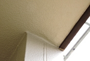 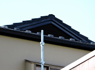
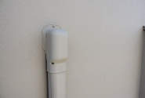
○ 完工前に足場に登り各場所を入念に点検チェックして、仕上がり状況を確認します。その後タッチアップによる修正や補修を行います。
細部の塗装状態のチェック
◆ 完工（After） ↓
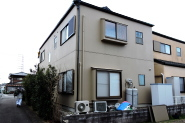
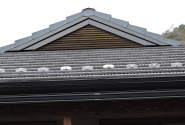 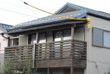
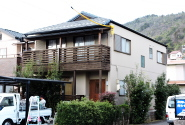
○ 足場を外してから、安心して住んで頂けるように、さらに再度確認をして完成です。
1 2 3 4 完成写真
M邸外壁防水塗装工事詳細は こちら ビフォー ⇒ アフターは こちら
バナースペース
ホームメイドで嬉しいリフォーム！
〒500-8029
岐阜市東材木町37-2
代表者 臼井常雄
TEL 058-262-5694
FAX 058-262-5689
携帯 090-8451-0238